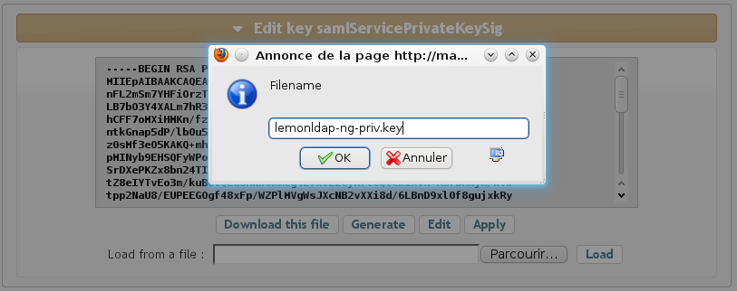

Google Apps
Presentation
Google Apps can use SAML to authenticate users, behaving as an SAML service provider, as explained here: http://code.google.com/googleapps/domain/sso/saml_reference_implementation.html. To work with LemonLDAP::NG it requires:- An enterprise Google Apps account
- LemonLDAP::NG 1.0 configured as Identity Provider
- Registered users on Google Apps with the same email than those used by LemonLDAP::NG (email will be the NameID exchanged between Google Apps and LemonLDAP::NG)
Configuration
Google Apps
Note: this part is based on SimpleSAMLPHP documentation: http://simplesamlphp.org/docs/1.6/simplesamlphp-googleapps. As administrator, go in Google Apps control panel and clik on Advanced tools: Then select "Set up single sign-on (SSO)":
Then select "Set up single sign-on (SSO)":
 Now configure all SAML parameters:
Now configure all SAML parameters:

- Enable Single Sign-On: check the box. Uncheck it to disable SAML authentication (for example, if your Identity Provider is down).
- Sign-in page URL: SSO access point (HTTP-Redirect binding). Example: http://auth.example.com/saml/singleSignOn
- Sign-out page URL: this in not the SLO access point (Google Apps does not support SLO), but the main logout page. Example: http://auth.example.com/?logout=1
- Change password URL: where users can change their password. Example: http://auth.example.com

After choosing the file name (for example lemonldapn-ng-priv.key), download the key on your disk. The use openssl to generate an auto-signed certificate:
$ openssl req -new -key lemonldap-ng-priv.key -out cert.csr
$ openssl x509 -req -days 3650 -in cert.csr -signkey lemonldap-ng-priv.key -out cert.pem
LemonLDAP::NG
You should have configured LemonLDAP::NG as an SAML Identity Provider, following this documentation. Now we will add Google Apps as a new SAML Service Provider:- In Manager, click on SAML service providers and the button New metadatas.
- Set GoogleApps as Service Provider name.
- Set Email in Options > *Authentication Response* > Default NameID format
- Disable all signature flags in Options > *Signature*, except Sign SSO message which should be to On
- Select Metadata, and unprotect the field to paste the following value:
<md:EntityDescriptor entityID="google.com" xmlns="urn:oasis:names:tc:SAML:2.0:metadata" xmlns:ds="http://www.w3.org/2000/09/xmldsig#" xmlns:md="urn:oasis:names:tc:SAML:2.0:metadata"> <SPSSODescriptor protocolSupportEnumeration="urn:oasis:names:tc:SAML:2.0:protocol"> <AssertionConsumerService Binding="urn:oasis:names:tc:SAML:2.0:bindings:HTTP-POST" Location="https://www.google.com/a/*mydomain.org*/acs" index="1" /> <NameIDFormat>urn:oasis:names:tc:SAML:1.1:nameid-format:emailAddress</NameIDFormat> </SPSSODescriptor> </md:EntityDescriptor>